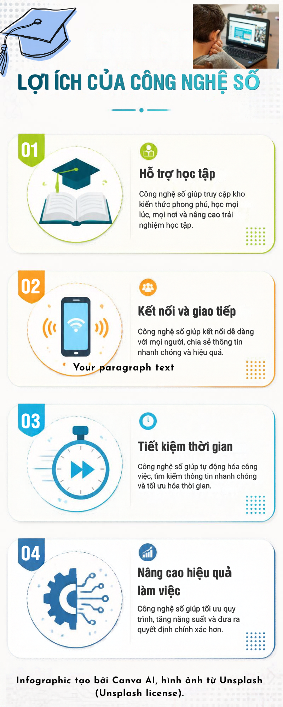

Ứng dụng công nghệ số trong học tập và cuộc sống
Công nghệ số ngày càng đóng vai trò quan trọng trong học tập, giao tiếp và công việc. Việc sử dụng các công cụ số phù hợp giúp con người tiếp cận thông tin nhanh chóng và nâng cao hiệu quả.
Dễ dàng tiếp cận tài liệu, học trực tuyến và sử dụng các công cụ hỗ trợ học tập.
Internet và các ứng dụng số giúp trao đổi thông tin với giáo viên, bạn bè và cộng đồng.
Các công cụ số giúp tìm kiếm, xử lý và chia sẻ thông tin nhanh chóng.
Công nghệ hỗ trợ làm việc, học tập và quản lý công việc hiệu quả hơn.

Infographic tạo bởi Canva AI, hình ảnh từ Unsplash (Unsplash license).
Video tạo bởi CapCut, tài liệu từ Pexels/FreeSound (CC0).